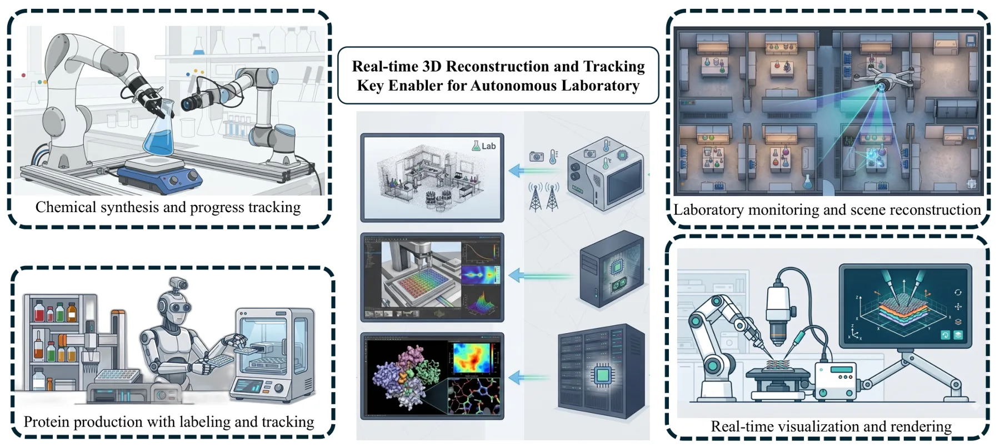
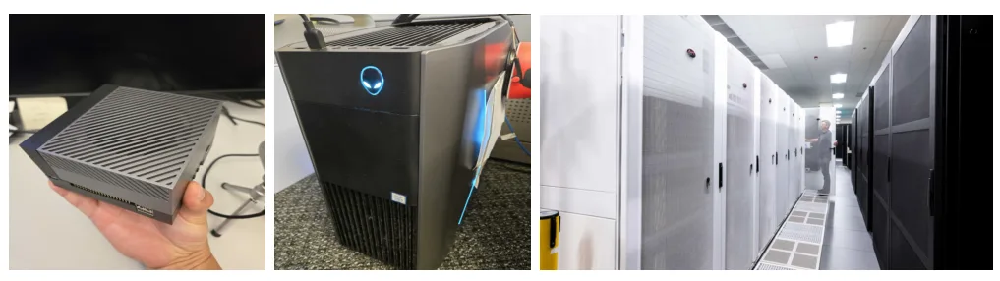
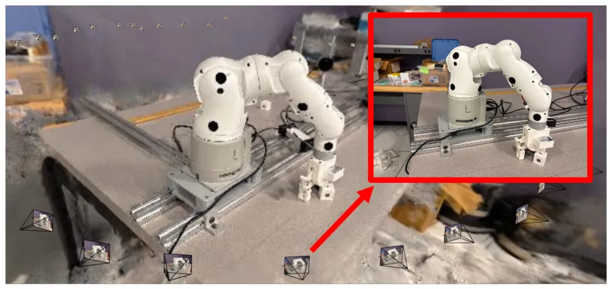
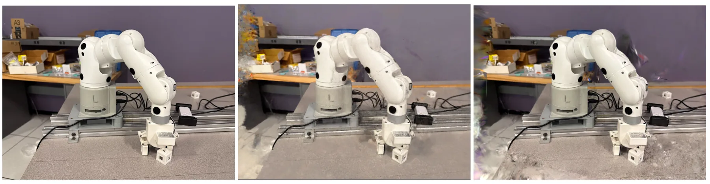
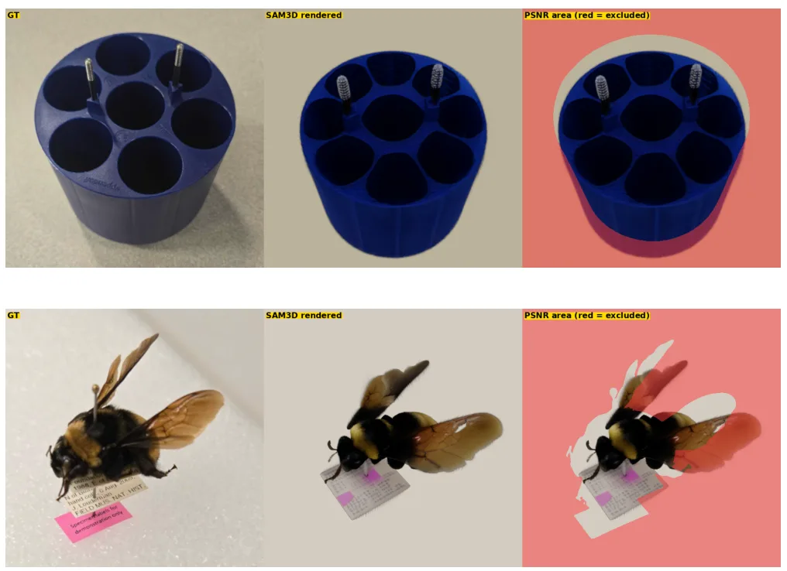
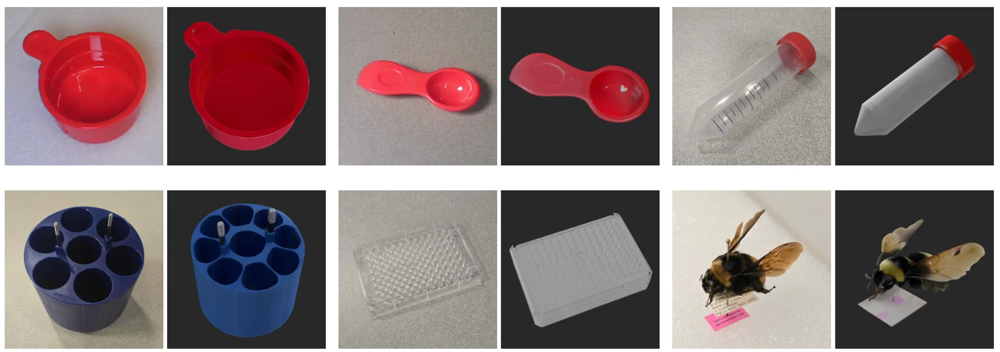
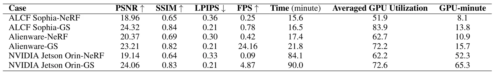

面向自主实验室机器人的神经三维重建跨平台基准
Cross-Platform Benchmark of Neural 3D Reconstruction for Autonomous Laboratory Robots
把重建质量、端侧算力和控制环路延迟放在同一张工程权衡图上，是从底层几何走向可靠具身系统的重要基准。

动机与问题Motivation
动机与问题
机器人需要在控制环路延迟预算内把相机流转换为可操作的三维对象表示，而 NeRF/GS 的逐场景优化通常需要分钟到小时。论文考察嵌入式、桌面和 HPC 平台的训练与渲染能力，并检验单图前馈速度是否以操作所需几何准确性为代价。
方法Method
方法总览
作者用 NerfStudio 的 nerfacto 和 splatfacto，在 Jetson AGX Orin、RTX-class Alienware 工作站和 A100 Sophia HPC 节点上进行 NeRF/GS 训练与渲染。另用实验室物体和 Meta SAM3D 做初步单图重建评估，把逐场景优化与前馈重建放进同一 latency–fidelity 框架。
关键技术细节
基准场景由 40 张 6-megapixel RGB 图像组成，相机位姿由 COLMAP 计算；NeRF 使用 nerfacto，GS 使用带 GPU rasterization 的 splatfacto。指标包括 PSNR、SSIM、LPIPS、训练时间、GPU-minutes、FPS 和 Gaussian 数量，论文将低于 10 FPS 视为交互式机器人任务的延迟风险。

实验Experiments
实验设置
实验覆盖一个机器人臂目标场景的 40-view 多视图采集，以及离心机桶等实验室物体的 SAM3D 初步测试。对照是 NeRF/nerfacto、GS/splatfacto 和 SAM3D；报告 FPS、PSNR、训练耗时/GPU-minutes，SAM3D 还参考 SA-3DAO 的 F-1 与 Chamfer distance。
实验数字与比较
在 Sophia HPC 节点，GS 的 PSNR 为 24.32 dB，NeRF 为 18.96 dB，高 5.95 dB；GPU-minutes 为 13.8 对 8.1，约多 70%。在 Jetson Orin，GS 与 NeRF 的 GPU-minutes 分别为 65.3 和 52.3，多 25%；SAM3D 在 SA-3DAO 报告 F-1=0.2344、Chamfer distance=0.04，但不能替代实验室物体的真实几何验证。
消融/失败边界
论文没有新模型的模块消融，因为研究对象是现有方法和平台的系统基准，因此不存在可据此宣称的去模块因果结果。边界包括单一 40-view 机器人场景、有限实验室物体和 SAM3D 初步评估；遮挡处的前馈幻觉几何可能导致抓取失败，且部分预处理成本未完全计入。
局限与迁移Limitations & Transfer
局限与待核验
作者明确指出研究集中在计算与重建质量，没有提出新的重建技术，也没有完成视觉分析或科学感知自主操作系统。待核验项包括多场景长期跟踪、位姿不确定性、真实抓取成功率、Jetson 端到端功耗，以及统一计入 COLMAP/预处理后的公平实时比较。
与你研究路线的关系
它提供了“底层几何表示—平台资源—具身控制环路”的可复现实验模板，可迁移模块是统一的 FPS/GPU-minutes/几何质量报告和端侧—服务器分层调度。下一步可加入 pose covariance、失效检测和动态物体，比较 GS、foundation pointmap 与传统 VIO/SLAM 在控制闭环中的任务级收益。
{kind=link}

{kind=link}

{kind=link}

{kind=link}

{kind=link}
